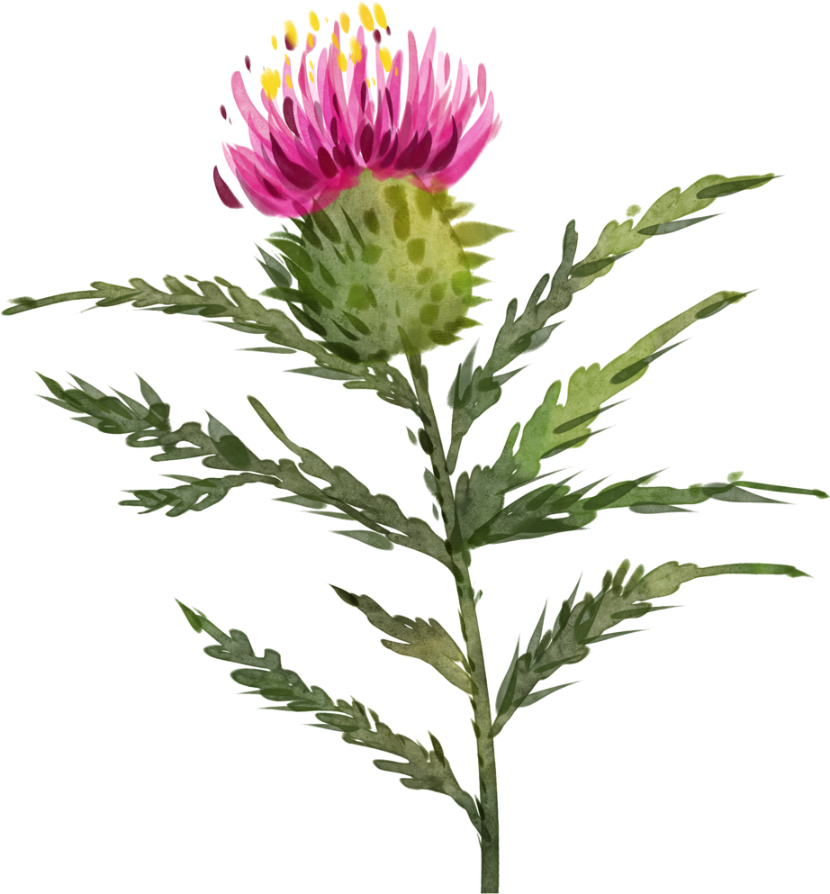

El idioma posee 7 vocales. Cada sílaba mantiene su calidad vocálica plena.
| Consonantes | Labial | Dental | Alveolar | Post-Alv. | Palatal | Velar | ||||
|---|---|---|---|---|---|---|---|---|---|---|
| Hard | Soft | Hard | Soft | Hard | Soft | Hard | Soft | Hard | Soft | |
| Nasal | m | mʲ | n | nʲ | ||||||
| Plosiva | p b | pʲ bʲ | t d | tʲ dʲ | k g | kʲ gʲ | ||||
| Africada | t͡s | t͡ɕ | ||||||||
| Fricativa | f v | fʲ vʲ | s z | sʲ zʲ | ʂ ʐ | ɕ | x | xʲ | ||
| Aproximante | j | w | ||||||||
| Lateral | l | lʲ | ||||||||
| Tap | ɾ | ɾʲ | ||||||||
Tabla introductoria del alfabeto con valor fonético, nombre, ejemplo y traducción.
| Grafema | AFI | Nombre | Ejemplo | Traducción | ||
|---|---|---|---|---|---|---|
| A | /a/ | a | [ä] | an | [an] | año |
| B | /b/ | be | [bʲe] | buan | [bʷan] | bueno |
| C | /k/, /t͡ɕ/ | ce | [t͡ɕe] | ciatro | [t͡ɕa.tɾo] | centro |
| D | /d/ | de | [dʲe] | domiach | [do.ˈmʲak] | domingo |
| E | /je/ | e | [je] | exame | [e.ˈsʲa.me] | examen |
| Ē | /ɛ/ | ē | [ɛ] | ēconomia | [ɛ.ko.ˈno.mʲa] | economía |
| F | /f/ | ēf | [ɛf] | felicĭ | [fe.ˈlʲit͡ɕ] | feliz |
| G | /g/, /ʐ/ | ge | [ʐɛ] | grudĭ | [gɾutʲ] | grande |
| H | — | haca | [ˈa.ka] | hiarĭ | [ˈjaɾʲ] | ayer |
| I | /i/, /j/ | i | [i] | ilĭ | [ilʲ] | él |
| K | /k/ | ka | [ka] | koala | [ko.ˈa.la] | koala |
| L | /l/ | ēl | [ɛɫ] | liega | [lʲe.zʲa] | lengua |
| M | /m/ | ēm | [ɛm] | mud | [mut] | mundo |
| N | /n/ | ēn | [ɛn] | nuacĭ | [nʷat͡ɕ] | noche |
| O | /o/ | o | [ɔ] | ochĭ | [ɔkʲ] | ojo |
| P | /p/ | pe | [pʲe] | prexona | [pre.ˈsʲɔ.na] | persona |
| R | /r/ | ēr | [ɛɾ] | rural | [ɾu.ˈɾaɫ] | rural |
| S | /s/ | ēs | [ɛs] | siatĭ | [sʲatʲ] | siete |
| T | /t/ | te | [tʲe] | tradutsa | [tɾa.ˈdu.t͡sa] | traducción |
| U | /u/, /w/ | u | [u] | urox | [ˈu.ɾox] | oso |
| V | /v/ | ve | [vʲe] | vita | [ˈvʲi.ta] | vida |
| W | /w/ | dupli-ve | [ˈdu.plʲ.vʲe] | wifi | [ˈwi.fʲi] | wifi |
| X | /x/ | xa | [xa] | ximia | [ˈʂi.mʲa] | química |
| Y | /ɨ/ | y | [ɨ] | ycà | [ɨ.ˈka] | decir y |
| Z | /z/ | zeta | [ˈzʲe.ta] | zooparc | [zʷo.ˈpaɾk] | zoo |
* [ä], [ɫ], [ɔ], [ɾ] se simplifican a [a], [l], [o], [r].
Este idioma posee 7 vocales fonémicas: a, e, ē, i, y, o, u.
| Vocal | AFI (tónica) | Equivalentes | Ruso |
|---|---|---|---|
| a | [ä] | a española | а |
| e | [je] | е rusa | е |
| ē | [ɛ] | bet inglés | э |
| i | [i] | i española | и |
| y | [ɨ] | ы rusa | ы |
| o | [ɔ] | not inglés | о |
| u | [u] | u española | у |
La vocal i siempre palataliza la consonante precedente.
vita [vʲi.ta]'vida'
mesĭ [mesʲ]'mes'
Se pronuncia [ɛ] en lugar de [e].
ēconomia [ɛ.ko.ˈno.mʲa]'economía'
Además, cuando va después de una c, indica que esta se pronuncia [t͡s].
cēlo [ˈt͡sɛ.lo]'cielo'
Átona y adyacente a vocal, funciona como semiconsonante [w].
dua [dʷa]'dos'
La Ĭ
Indica que la i es muda, pero palataliza la consonante anterior.
florĭ [florʲ]'flor'
Cuando la ĭ va justo antes de una c simplemente indica que la c se pronuncia [t͡s] y no se pronuncia.
cordĭce [ˈkor.t͡sɨ]'corazón'
Este idioma posee 22 sonidos consonánticos fonémicos.
| Grafemas | Valor fonético | Equivalente | Ruso |
|---|---|---|---|
| b | [b] | b española | б |
| c | [k], [t͡ɕ], [t͡s] | k, ch, z italiana | к, ч, ц |
| d | [d] | d española | д |
| f | [f] | f española | ф |
| g | [g], [ʐ] | g española, j francesa | г, ж |
| h | — | muda | — |
| k | [k] | k española | к |
| l | [l] | l española | л |
| m | [m] | m española | м |
| n | [n] | n española | н |
| p | [p] | p española | п |
| r | [r] | r italiana | р |
| s | [s] | s española | с |
| t | [t] | t española | т |
| v | [v] | v inglesa | в |
| w | [w] | w inglesa | — |
| x | [x], [ʂ] | j española, sh rusa | х, ш |
| z | [z] | z inglesa | з |
| sc | [ɕː] | sch rusa | щ |
Estas tres consonantes cambian de sonido dependiendo de las vocales que las rodean.
Antes de E o I
Ante e o i, la consonante cambia de sonido automáticamente.
| Consonante | Ante E / I | Resultado |
|---|---|---|
| c | ce, ci | [t͡ɕ] |
| g | ge, gi | [ʐ] |
| x | xe, xi | [ʂ] |
| sc | sce, sci | [ɕː] |
Después de E, I o IA
Cuando c, g o x van precedidas de e, i o ia, también cambian de sonido.
| Secuencia | Resultado |
|---|---|
| ec, ic, iac | [t͡s] |
| eg, ig, iag | [zʲ] |
| ex, ix, iax | [sʲ] |
Conservar el sonido original — añadir H
En cualquier caso, si se quiere conservar el sonido original de la consonante ante e o i, se añade una h.
| Con H | Pronunciación |
|---|---|
| che, chi | [k] |
| ghe, ghi | [g] |
| xhe, xhi | [x] |
ph → [f] th → [t]
| Masc. | Fem. | Neutro | ||
|---|---|---|---|---|
| Sg. | Nom. | -cons.mod'modo' | -avita'vida' | -otaplo'templo' |
| Gen. | -ymody'del modo' | -yvity'de la vida' | -itapli'del templo' | |
| Dat. | -umodu'al modo' | -evite'a la vida' | -utaplu'al templo' | |
| Pl. | Nom. | -ymody'modos' | -yvity'vidas' | -atapla'templos' |
| Gen. | -urmodur'de los modos' | -arvitar'de las vidas' | -ortaplor'de los templos' | |
| Dat. | -ismodis'a los modos' | -isvitis'a las vidas' | -istaplis'a los templos' |
| Masc. | Fem. | Neutro | ||
|---|---|---|---|---|
| Sg. | Nom. | -ĭlionĭ'león' | -ĭflorĭ'flor' | -e/-iomare'mar' |
| Gen. | -ilioni'del león' | -iflori'de la flor' | -imari'del mar' | |
| Dat. | -iulioniu'al león' | -ieflorie'a la flor' | -iumariu 'al mar' | |
| Pl. | Nom. | -ilioni'leones' | -iflori'flores' | -iamaria'mares' |
| Gen. | -iurlioniur'de los leones' | -iarfloriar'de las flores' | -iormarior'de los mares' | |
| Dat. | -imlionim'a los leones' | -imflorim'a las flores' | -immarim'a los mares' |
Sustantivos neutros con raíz irregular en los casos oblicuos, heredada del latín.
| Nom. | Gen. | Dat. | |
|---|---|---|---|
| Sg. | nome | nomini | nominu |
| Pl. | nomina | nomin | nominim |
| Nom. | Gen. | Dat. | |
|---|---|---|---|
| Sg. | cuarpo | cuarpi | cuarpu |
| Pl. | cuarpora | corpor | cuarporim |
| Nom. | Gen. | Dat. | |
|---|---|---|---|
| Sg. | tapo | tapi | tapu |
| Pl. | tapora | tapor | taporim |
Usando el sufijo -iostĭ.
reialĭ → reialiostĭ'real' → 'realidad'
stavlĭ → stavliostĭ'estable' → 'estabilidad'
| Sufijo | Uso | Ejemplo |
|---|---|---|
| -enie | Acciones, procesos, estados o resultados. | stugià→stugenie'estudio' |
| -atsa | Deriva verbos de primera conjugación. | cufirmà→cufirmatsa'confirmación' |
| -iatsa | Deriva verbos de segunda conjugación. | sci→sciatsa'conocimiento' |
| -agĭ | Acciones, procesos, resultados, colecciones u objetos. | paisagĭ'paisaje' |
| -iz | Indica resultados, procesos u objetos. | analizà→anàliz'análisis' |
| -miuto | Expresa el proceso o resultado de una acción. | tratà→tratamiuto'tratamiento' |
Usando el sufijo -ario.
Indican la persona o entidad que realiza una acción.
| Sufijo | Base | Significado | Ejemplo |
|---|---|---|---|
| -tor | Verbos | Realizadores, profesiones tradicionales. | invatà→invator'enviador' |
| -er | Sustantivos | Neoprofesiones, usuarios activos. | instagram→instagramer'instagramer' |
| -isto | Sustantivos | Especialistas, artes, deportes, ideología. | violin→violinisto'violinista' |
| -ute / -ate | Verbos | Internacionalismos. | assiste→assistate'estudiante' |
| -ario | Sustantivos | Profesiones relacionadas con un objeto. | panĭ→paniario'panadero' |
| Sufijo | Base | Significado | Ejemplo |
|---|---|---|---|
| -trilĭ | Verbos | Realizadores, profesiones tradicionales. | invatà→invatrilĭ'enviador (masc.)' |
| -ec | Sustantivos | Neoprofesiones, usuarios activos. | instagram→instagramec'instagramer (masc.)' |
| -elĭ | Sustantivos | General. | amicho→amichelĭ'amigo (masc.)' |
| Sufijo | Base | Significado | Ejemplo |
|---|---|---|---|
| -trica | Verbos | Realizadores, profesiones tradicionales. | invatà→invatrica'enviadora (fem.)' |
| -ica | Sustantivos | Neoprofesiones, usuarios activos. | instagram→instagramica'instagramera (fem.)' |
| -ica | Sustantivos | General. | amicho→amichica'amiga (fem.)' |
| -ca | Sustantivos | Gentilicios. | mexico→mexicanca'mexicana (fem.)' |
Próximamente.
Los adjetivos concuerdan con el sustantivo en género, número y caso.
| Decl. | Nom. | Gen. | Dat. | |
|---|---|---|---|---|
| Dura | Masc. | -∅/-ŭ* buan'bueno' |
-uĭ buanuĭ'del bueno' |
-u buanu'al bueno' |
| Fem. | -a buana'buena' |
-eĭ buaneĭ'de la buena' |
-e buane'a la buena' | |
| Neutro | -o buano'bueno' |
-y buany'de lo bueno' |
-ou buanou'a lo bueno' | |
| Plural | -y buany'buenos/as' |
-yr buanyr'de los buenos' |
-is buanis'a los buenos' | |
| Blanda | Masc. | -ĭ acrĭ'acre' |
-iĭ acriĭ'del acre' |
-iu acriu'al acre' |
| Fem. | -ĭ acrĭ'acre' |
-ieĭ acrieĭ'de la acre' |
-ie acrie'a la acre' | |
| Neutro | -e/-io acre'acre' |
-i acri'de lo acre' |
-iou acriou'a lo acre' | |
| Plural | -i acri'acres' |
-ir acrir'de los acres' |
-im acrim'a los acres' |
Sufijos para convertir un sustantivo en adjetivo.
Se forman añadiendo -utĭ para la primera conjugación, -iatĭ para la segunda y -iatĭ para la tercera. El acento recae en la última sílaba. El plural se forma añadiendo -i.
Ante -ior/-iory, las consonantes finales del adjetivo cambian:
Adjetivo + -ior (sg.) / -iory (pl.) + ca.
Ilĭ est felicior ca io.'Él es más feliz que yo.'
Ili sut feliciori ca noĭ.'Ellos son más felices que nosotros.'
min + adjetivo + ca.
Ilĭ est min aut ca ty.'Él es menos alto que tú.'
ta + adjetivo + ca.
Ila est ta felicĭ ca ilĭ.'Ella es tan feliz como él.'
Artículo + Adjetivo + artículo (concuerda en género y número) + mai.
Ila est la felicĭ mai.'Ella es la más feliz.'
Adjetivo + artículo (concuerda en género y número) + min.
Ila est la felicĭ min.'Ella es la menos feliz.'
| Sg. | Pl. | Significado |
|---|---|---|
| milior | miliori | 'mejor' |
| peior | peiori | 'peor' |
| maior | maiori | 'mayor' |
| minor | minori | 'menor' |
Se antepone al sustantivo. Concuerda en género y número. Solo existe en nominativo.
| Número | Género | Nom. |
|---|---|---|
| Singular | Masc. | il |
| Fem. | la | |
| Neutro | lo | |
| Plural | Todos | li |
Se antepone al sustantivo. Concuerda en género, número y caso.
| Número | Género | Nom. | Gen. | Dat. |
|---|---|---|---|---|
| Singular | Masc. | vyn | vynuĭ | vynu |
| Fem. | vyna | vyneĭ | vyne | |
| Neutro | vyno | vyny | vynou | |
| Plural | Todos | vyni | vynir | vynis |
Cercanía / distancia media
| Masc. | Fem. | Neutro | Plural | |
|---|---|---|---|---|
| Nom. | acestĭ | acesta | acesto | acesti |
| Gen. | acestuĭ | acesteĭ | acesty | acestir |
| Dat. | acestu | aceste | acestou | acestim |
Lejanía
| Masc. | Fem. | Neutro | Plural | |
|---|---|---|---|---|
| Nom. | acelĭ | acela | acelo | aceli |
| Gen. | aceluĭ | aceleĭ | acely | acelir |
| Dat. | acelu | acele | acelou | acelim |
Vau vide si cy a cēce taxi per ací.'Veré si hay algún taxi por aquí.'
Nu au nucino libr acesty autory.'No tengo ningún libro de este autor.'
Toti li aluna aut approvàt l'exame.'Todos los alumnos han aprobado el examen.'
Cy a mout xiuma in la strata.'Hay mucho ruido en la calle.'
A bivýt poc vini.'Bebió poco vino.'
Ce libr es citú?'¿Qué libro estás leyendo?'
Rige genitivo.
Cut alunor aut venít class?'¿Cuántos alumnos vinieron a clase?'
Calĭ prēferis?'¿Cuál prefieres?'
Ce frid facit avogĭ!'¡Qué frío hace hoy!'
Cut giatiar cy aveat in la platsa!'¡Cuánta gente había en la plaza!'
Il libr cui autor au conoscít hiari.'El libro cuyo autor conocí ayer.'
La civiostĭ du au nascít.'La ciudad donde nací.'
Li prexony ce aut arrivàt in retard.'Las personas que llegaron tarde.'
| Nom. | Acus. | Dat. | Gen. | Instr. | |
|---|---|---|---|---|---|
| yo | io | me | mi | mei | mecu |
| tú | ty | te | ti | tui | tecu |
| él, ella | ilĭ, ila, ilo | il, la, lo | li | lui, lei, ly | lecu, lacu, locu |
| nosotros | noĭ | ne | ni | nui | noiscu |
| vosotros | voĭ | ve | vi | vui | voiscu |
| ellos | ili | le | lim | lir | licu |
Referencia a persona de género desconocido o no relevante.
Cregio ce ilo nu vualit vide me ací.'Creo que no quieren verme aquí.'
| Pron. | Masc. | Fem. | Neutro | Plural | |
|---|---|---|---|---|---|
| Nom. | mi | meĭ'mío' | mia'mía' | mio'lo mío' | moí'míos' |
| tu | teĭ'tuyo' | tua'tuya' | tuo'lo tuyo' | toí'tuyos' | |
| su | seĭ'suyo' | sua'suya' | suo'lo suyo' | soí'suyos' | |
| nu | neĭ'nuestro' | nua'nuestra' | nuo'lo nuestro' | noí'nuestros' | |
| vu | veĭ'vuestro' | vua'vuestra' | vuo'lo vuestro' | voí'vuestros' | |
| lor | lor'suyo' | lor'suya' | lor'lo suyo' | lor'suyos' | |
| Gen. | mi | miĭ'del mío' | mieĭ'de la mía' | mei'de lo mío' | meir'de los míos' |
| tu | tuoĭ'del tuyo' | tueĭ'de la tuya' | tui'de lo tuyo' | teir'de los tuyos' | |
| su | suoĭ'del suyo' | sueĭ'de la suya' | sui'de lo suyo' | seir'de los suyos' | |
| nu | nuoĭ'del nuestro' | nueĭ'de la nuestra' | nui'de lo nuestro' | neir'de los nuestros' | |
| vu | vuoĭ'del vuestro' | vueĭ'de la vuestra' | vui'de lo vuestro' | veir'de los vuestros' | |
| lor | lor'del suyo' | lor'de la suya' | lor'de lo suyo' | lor'de los suyos' | |
| Dat. | mi | miu'al mío' | mie'a la mía' | miou'a lo mío' | meis'a los míos' |
| tu | tou'al tuyo' | tue'a la tuya' | tuou'a lo tuyo' | teis'a los tuyos' | |
| su | sou'al suyo' | sue'a la suya' | suou'a lo suyo' | seis'a los suyos' | |
| nu | nou'al nuestro' | nue'a la nuestra' | nuou'a lo nuestro' | neis'a los nuestros' | |
| vu | vou'al vuestro' | vue'a la vuestra' | vuou'a lo vuestro' | veis'a los vuestros' | |
| lor | lor'al suyo' | lor'a la suya' | lor'a lo suyo' | lor'a los suyos' |
Pronombre neutro de objeto directo. No se refiere a un sustantivo específico sino a una idea neutral o abstracta.
Pronombre clítico que cumple múltiples funciones gramaticales. Sustituye frecuentemente sintagmas preposicionales con a, in o s, y puede referirse a lugares, ideas abstractas o formar parte de expresiones fijas.
Pronombre clítico partitivo. Sustituye complementos introducidos por de o expresiones de cantidad.
actò — cerca · tò — lejos
Terminan en -à, -e o -i, precedidos de a.
| a lavorà | a muave | a duce | a venī | ||
|---|---|---|---|---|---|
| yo | io | lavoro | muavio | duco | venio |
| tú | ty | lavoras | muavis | ducis | vianis |
| él/ella | ilĭ/ila | lavorat | muavit | ducit | vianit |
| nosotros | noĭ | lavoram | muavim | ducim | vianim |
| vosotros | voĭ | lavoratĭ | muavitĭ | ducitĭ | vianitĭ |
| ellos | ili | lavorut | muaviat | ducut | vianiut |
Alternancia consonántica
En la primera persona del singular y la tercera del plural, la consonante final del lexema cambia según estas reglas.
| a siutī | a crede | a resiste | ||
|---|---|---|---|---|
| yo | io | siutso | cregio | resiscio |
| tú | ty | siutis | credis | resistis |
| él/ella | ilĭ/ila | siutit | credit | resistit |
| nosotros | noĭ | siutim | credim | resistim |
| vosotros | voĭ | siutitĭ | creditĭ | resistitĭ |
| ellos | ili | siutsut | cregiut | resisciut |
Se forma con el verbo a ave como auxiliar seguido del participio del verbo.
| Auxiliar | Ejemplo | ||||
|---|---|---|---|---|---|
| yo | io | au | + | vis | io au vis'yo vi' |
| tú | ty | as | ty as vis'tú viste' | ||
| él/ella | ilĭ/ila | a | ilĭ a vis'él vio' | ||
| nosotros | noĭ | am | noĭ am vis'nosotros vimos' | ||
| vosotros | voĭ | atĭ | voĭ atĭ vis'vosotros visteis' | ||
| ellos | ili | aut | ili aut vis'ellos vieron' |
Se forma con el verbo a vade como auxiliar seguido del infinitivo del verbo.
| Auxiliar | Ejemplo | ||||
|---|---|---|---|---|---|
| yo | io | vau | + | vide | io vau vide'yo veré' |
| tú | ty | vas | ty vas vide'tú verás' | ||
| él/ella | ilĭ/ila | va | ilĭ va vide'él verá' | ||
| nosotros | noĭ | vam | noĭ vam vide'nosotros veremos' | ||
| vosotros | voĭ | vatĭ | voĭ vatĭ vide'vosotros veréis' | ||
| ellos | ili | vaut | ili vaut vide'ellos verán' |
| a lavorà | a crede | a venī | ||
|---|---|---|---|---|
| yo | io | lavorava | credea | veniea |
| tú | ty | lavoravas | credeas | venieas |
| él/ella | ilĭ/ila | lavoravat | credeat | venieat |
| nosotros | noĭ | lavoravam | credeam | venieam |
| vosotros | voĭ | lavoravatĭ | credeatĭ | venieatĭ |
| ellos | ili | lavoravut | credeut | venieut |
| a lavorà | a crede | a venī | ||
|---|---|---|---|---|
| yo | io | lavorara | credra | veniara |
| tú | ty | lavoraras | credras | veniaras |
| él/ella | ilĭ/ila | lavorarat | credrat | veniarat |
| nosotros | noĭ | lavoraram | credram | veniaram |
| vosotros | voĭ | lavoraratĭ | credratĭ | veniaratĭ |
| ellos | ili | lavorarut | credrut | veniarut |
El genitivo del gerundio (terminaciones -udi, -iadi, -iiadi) expresa una acción verbal como complemento de un sustantivo abstracto.
L'opportuniostĭ fabludi.'La oportunidad de hablar.'
La sperutsa viaciudi.'La esperanza de ganar.'
L'artĭ liuviudi.'El arte de amar.'
| a lavorà | a crede | a venī | ||
|---|---|---|---|---|
| yo | io | lavori | cregia | venia |
| tú | ty | lavoris | cregias | venias |
| él/ella | ilĭ/ila | lavorit | cregiat | veniat |
| nosotros | noĭ | lavorim | cregiam | veniam |
| vosotros | voĭ | lavoritĭ | cregiatĭ | veniatĭ |
| ellos | ili | lavorat | cregiut | veniut |
Alternancia consonántica (1ª sg.)
En la primera persona del singular actúan las mismas reglas que en el presente.
| a siutī | a crede | a resiste | ||
|---|---|---|---|---|
| yo | io | siutsa | cregia | resiscia |
| tú | ty | siutis | cregias | resistis |
| él/ella | ilĭ/ila | siutit | cregiat | resistat |
| nosotros | noĭ | siutim | cregiam | resistam |
| vosotros | voĭ | siutitĭ | cregiatĭ | resistatĭ |
| ellos | ili | siutsut | cregiut | resisciut |
| a lavorà | a crede | a venī | ||
|---|---|---|---|---|
| yo | io | lavoressĭ | credissĭ | venissĭ |
| tú | ty | lavoressis | credissis | venissis |
| él/ella | ilĭ/ila | lavoressit | credissit | venissit |
| nosotros | noĭ | lavoressim | credissim | venissim |
| vosotros | voĭ | lavoressitĭ | credissitĭ | venissitĭ |
| ellos | ili | lavoressiat | credissiat | venissiat |
La forma de nosotros usa el subjuntivo presente.
| a lavorà | a crede | a venī | a esse | a ave | ||
|---|---|---|---|---|---|---|
| tú | ty | lavoraĭ | credĭ | venĭ | essĭ | avĭ |
| nosotros | noĭ | lavorem | cregiam | veniam | sim | aiam |
| vosotros | voĭ | lavoraite | credĭte | venĭte | esĭte | avĭte |
Presente
| a esse | a ave | a vade | ||
|---|---|---|---|---|
| yo | io | su | au | vau |
| tú | ty | es | as | vas |
| él/ella | ilĭ/ila/ilo | est | à | va |
| nosotros | noĭ | som | am | vam |
| vosotros | voĭ | estĭ | atĭ | vatĭ |
| ellos | ili | sut | aut | vaut |
Imperfecto
| a esse | a ave | ||
|---|---|---|---|
| yo | io | era | avea |
| tú | ty | eras | aveas |
| él/ella | ilĭ/ila/ilo | erat | aveat |
| nosotros | noĭ | eram | aveam |
| vosotros | voĭ | eratĭ | aveatĭ |
| ellos | ili | erut | aveut |
Subjuntivo
| a esse | a ave | ||
|---|---|---|---|
| yo | io | sia | aia |
| tú | ty | sis | aias |
| él/ella | ilĭ/ila/ilo | sit | aiat |
| nosotros | noĭ | sim | aiam |
| vosotros | voĭ | sitĭ | aiatĭ |
| ellos | ili | siat | aiut |
Subjuntivo imperfecto
| a esse | a ave | ||
|---|---|---|---|
| yo | io | fuassĭ | avissĭ |
| tú | ty | fuassis | avissis |
| él/ella | ilĭ/ila/ilo | fuassit | avissit |
| nosotros | noĭ | fuassim | avissim |
| vosotros | voĭ | fuassitĭ | avissitĭ |
| ellos | ili | fuassiat | avissiat |
nu antes del verbo.
| Número | Género | Nom. | Gen. | Dat. |
|---|---|---|---|---|
| Singular | Masc. | vyn | vynuĭ | vynu |
| Fem. | vyna | vyneĭ | vyne | |
| Neutro | vyno | vyny | vynou | |
| Plural | Todos | vyni | vynir | vynis |
| 2 | 3 | 4 | 5 | 6 | 7 | 8 | 9 | 10 | |
|---|---|---|---|---|---|---|---|---|---|
| Nom. | doi | tre | cetro | ciacĭ | six | siatĭ | oto | nuavĭ | diace |
| Gen. | duor | trer | cetri | ciaci | sixi | siati | oty | nuavi | diaci |
| Dat. | duom | trem | cetrim | ciacim | sixim | siatim | otim | nuavim | diacim |
| 11 | 12 | 13 | 14 | 15 | 16 | 17 | 18 | 19 | 20 | |
|---|---|---|---|---|---|---|---|---|---|---|
| Nom. | vyze | doze | trize | catroze | ciaze | seze | setaze | otoze | novaze | viatĭ |
| Gen. | vyzi | dozi | trizi | catrozi | ciazi | sezi | setazi | otozi | novazi | viati |
| Dat. | vyzim | dozim | trizim | catrozim | ciazim | sezim | setazim | otozim | novazim | viatim |
| 21 | 22 | 23 | 24 | 25 | 26 | 27 | 28 | 29 | |
|---|---|---|---|---|---|---|---|---|---|
| Nom. | viatĭ-vyn/a/o | viatĭ-doi | viatĭ-tre | viatĭ-cetor | viatĭ-ciacĭ | viatĭ-six | viatĭ-siatĭ | viatĭ-oto | viatĭ-nuavĭ |
| Gen. | viati-vynuĭ/eĭ/y | viati-duor | viati-trer | viati-cetri | viati-ciaci | viati-sixi | viati-siati | viati-oty | viati-nuavi |
| Dat. | viatim-vynu/e/ou | viatim-duom | viatim-trim | viatim-cetrim | viatim-ciacim | viatim-sixim | viatim-siatim | viatim-otim | viatim-nuavim |
| 30 | 40 | 50 | 60 | 70 | 80 | 90 | |
|---|---|---|---|---|---|---|---|
| Nom. | triata | cadriata | ciciata | sixiata | setiata | ociata | noviata |
| Gen. | triati | cadriati | ciciati | sixiati | setiati | ociati | noviati |
| Dat. | triatim | cadriatim | ciciatim | sixiatim | setiatim | ociatim | noviatim |
| 100 | 200 | 300 | 400 | 500 | 600 | 700 | 800 | 900 | |
|---|---|---|---|---|---|---|---|---|---|
| Nom. | ciuto | duciuti | triciuti | cadriciuti | ciaciuti | sesciuti | setiaciuti | otiaciuti | noviciuti |
| Gen. | ciuta | duciator | triciator | cadriciator | ciaciutor | sesciator | setiaciator | otiaciator | noviciator |
| Dat. | ciutis | duciutis | triciutis | cadriciutis | ciaciutis | sesciutis | setiaciutis | otiaciutis | noviciutis |
| 1 000 | 2 000 | 3 000 | 4 000 | 5 000 | 6 000 | 7 000 | 8 000 | 9 000 | |
|---|---|---|---|---|---|---|---|---|---|
| Nom. | milĭ | doi/dua milia | tre milia | cetor milia | ciacĭ milia | six milia | siatĭ milia | oto milia | nuavĭ milia |
| Gen. | mili | duor mili | trer mili | cetri mili | ciaci mili | sixi mili | siati mili | oty mili | nuavi mili |
| Dat. | milim | duom milim | trem milim | cetrim milim | ciacim milim | sixim milim | siatim milim | otim milim | nuavim milim |
| Nom. | Gen. | Dat. | |
|---|---|---|---|
| milion | vyn milion | vynuĭ miliony | vynu milionu |
| bilion | vyn bilion | vynuĭ biliony | vynu bilionu |
Nom. masc. en -im. El resto: -ima (f.) · -imo (n.) · -imy (pl.)
| 1° | 2° | 3° | 4° | 5° | 6° | 7° | 8° | 9° | 10° |
|---|---|---|---|---|---|---|---|---|---|
| prim | dosim | tresim | cetresim | ciacesim | sixtesim | setesim | otesim | novesim | decesim |
| 11° | 12° | 13° | 14° | 15° | 16° | 17° | 18° | 19° |
|---|---|---|---|---|---|---|---|---|
| vyzesim | dozesim | trizesim | cetrozesim | ciazesim | sezesim | setazesim | otozesim | novazesim |
| 20° | 30° | 40° | 50° | 60° | 70° | 80° | 90° |
|---|---|---|---|---|---|---|---|
| vicesim | tricesim | cadracesim | ciacacesim | sixacesim | setacesim | otacesim | novacesim |
| 100° | 200° | 300° | 400° | 500° | 600° | 700° | 800° | 900° | 1 000° |
|---|---|---|---|---|---|---|---|---|---|
| ciutesim | duciutesim | triciutesim | cadriciutesim | ciaciutesim | sesciutesim | setiaciutesim | otiaciutesim | noviciutesim | milesim |
| Ordinal (masc.) | |
|---|---|
| milion | vyn milionesim |
| bilion | vyn bilionesim |
| Nom. | |
|---|---|
| 1/2 | vyn miagĭ |
| 1/3 | vyn tiarts |
| 1/4 | vyn cart |
| 1/5 | vyn ciat |
| 1/6 | vyn sixt |
| 1/7 | vyn setesim |
| 1/8 | vyn otesim |
| 1/9 | vyn novesim |
| 1/10 | vyn decesim |
| 1/11 | vyn vyzesim |
| 1/12 | vyn dozesim |
| 2/3 | doi tiartsi |
| 3/4 | tre carty |
| 4/5 | cetro ciaty |
| 5/6 | ciacĭ sixtor |
| Nom. | |
|---|---|
| 2× | duplĭ |
| 3× | triplĭ |
| 4× | cadruplĭ |
| 5× | ciatuplĭ |
| 6× | sixtuplĭ |
| 7× | siatuplĭ |
| 8× | otuplĭ |
Del 2 al 4 el sustantivo va en genitivo singular. Del 5 en adelante va en genitivo plural.
Ilĭ à doi libry.'Tiene dos libros.'
Cy-à ciacĭ melar in la tavla.'Hay cinco manzanas en la mesa.'
Cuando un sustantivo sigue a una unidad de medida, aparece en genitivo. El número determina si es genitivo singular o plural.
Au bivýt doi vitry vody.'Bebí dos vasos de agua.'
Am demudàt tre litry bezeny.'Pedimos tres litros de gasolina.'
Los cuantificadores indefinidos también rigen genitivo en el sustantivo que sigue.
As sufficiate tapori.'Tienes suficiente tiempo.'
A addít mout butry.'Añadió mucha mantequilla.'
Los adverbios modifican verbos, adjetivos u otros adverbios, expresando modo, lugar, tiempo, frecuencia, grado o causa.
No se derivan de otra palabra.
Se forman añadiendo -amiatĭ o -emiatĭ al adjetivo. En el habla coloquial también se puede usar el adjetivo en su forma normal.
| 1 | ianarĭ |
| 2 | febrarĭ |
| 3 | marts |
| 4 | aprilĭ |
| 5 | maĭ |
| 6 | iunĭ |
| 7 | iulĭ |
| 8 | ugust |
| 9 | setiabrĭ |
| 10 | otobrĭ |
| 11 | noviabrĭ |
| 12 | deciabrĭ |
| 1 | 2 | 3 | 4 | 5 | 6 | 7 |
|---|---|---|---|---|---|---|
| lyne | martĭ | miarocrĭ | iovĭ | vianerĭ | sapto | domiach |
Sustantiva
Adverbial